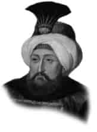

IV. MEHMET
Annesi : Turhan Sultan
Doğumu : 2 Ocak 1642
Vefatı : 6 Ocak 1693
Saltanatı : 1648-1687 (39 yıl)
IV. Mehmet, İstanbul’da doğdu. Annesi onu çok iyi yetiştirdi. İyi bir ilim tahsili gördü. Zamanında birçok isyanlar oldu. Özellikle Yeniçeri isyanları bastırılmaya çalışıldı. Zamanında Kösem Sultan öldürüldü. Köprülü Mehmet Paşa sadrazam oldu. 1659’da Rusya’ya karşı büyük bir zafer elde edildi.
1660’da büyük İstanbul yangını oldu. 1661’de Köprülü Mehmet Paşa öldü. Yerine oğlu Fazıl Ahmet Paşa sadrazam oldu. 1663’de Almanya Savaşı başladı ve Uyvar fethedildi. 1664’de Serinvar Zaferi kazanıldı. Novigrad, Yenikale fethedildi. Girit’in tamamı alındı. 1669’da Lehistan’a sefer açıldı. 1672’de Kamaniçe, Polonya ve Galiçya fethedildi. Lehistan ile Bucaş Antlaşması yapıldı. 1673’de IV. Mehmet iki defa Lehistan seferine çıktı. Başarılı bir seferden sonra Zoravno Antlaşması yapıldı. (1676)
Erkek çocukları: II. Mustafa, III. Ahmet, Ahmet, Beyazıt.
Kız çocukları: Hatice, Safiye, Ümmü Gülsüm, Fatma.